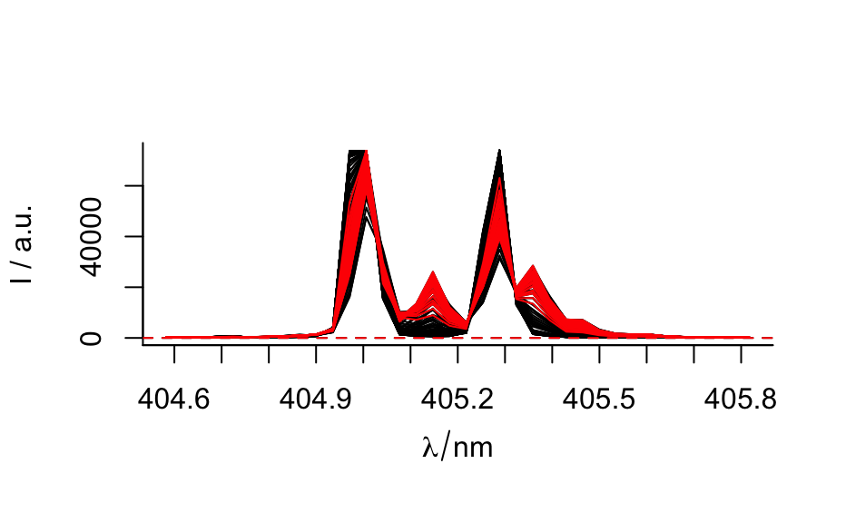

filter.hyperSpec.Rdfiltering based on extra data columns works smoothly,
but filtering on the spectra matrix needs some attention:
the filtering expression must return a logical vector with one value per spectrum,
see examples.
# S3 method for hyperSpec
filter(.data, ..., .preserve = FALSE)
# S3 method for hyperSpec
slice(.data, ..., .preserve = FALSE)A data frame, data frame extension (e.g. a tibble), or a lazy data frame (e.g. from dbplyr or dtplyr). See Methods, below, for more details.
<data-masking> Expressions that return a
logical value, and are defined in terms of the variables in .data.
If multiple expressions are included, they are combined with the & operator.
Only rows for which all conditions evaluate to TRUE are kept.
Relevant when the .data input is grouped.
If .preserve = FALSE (the default), the grouping structure
is recalculated based on the resulting data, otherwise the grouping is kept as is.
hyperSpec object with rows (spectra) matching the conditions (logical predicates) or the indices specified in ...
filter(laser, t < 250)
#> hyperSpec object
#> 5 spectra
#> 3 data columns
#> 36 data points / spectrum
laser %>% filter(t < 250)
#> hyperSpec object
#> 5 spectra
#> 3 data columns
#> 36 data points / spectrum
## filtering based on the spectra matrix:
# remove all spectra with NAs
tmp <- laser [1:6]
tmp [[3:4, , 404.7 ~ 404.9]] <- NA
tmp [[6]] <- NA
tmp %>% filter(!any_wl(is.na(spc)))
#> hyperSpec object
#> 3 spectra
#> 3 data columns
#> 36 data points / spectrum
tmp %>% filter(all_wl(!is.na(spc))) # the same
#> hyperSpec object
#> 3 spectra
#> 3 data columns
#> 36 data points / spectrum
# remove spectra that contain /only/ NAs:
tmp %>% filter(!all_wl(is.na(spc)))
#> hyperSpec object
#> 5 spectra
#> 3 data columns
#> 36 data points / spectrum
tmp %>% filter(any_wl(!is.na(spc))) # the same
#> hyperSpec object
#> 5 spectra
#> 3 data columns
#> 36 data points / spectrum
tmp %>% filter(spc == spc) # the same(!) due to dplyr's handling of NAs
#> Error in filter(.data@data, ..., .preserve = .preserve): Problem while computing `..1 = spc == spc`.
#> ✖ Input `..1` must be a logical vector, not a logical[,36].
# keep only spectra with minimum average intensity
laser %T>%
plot(spc.nmax = Inf) %>%
filter(rowMeans(spc) > 9000) %>%
plot(col = "red", add = TRUE)

chondro %>% slice(1:3)
#> hyperSpec object
#> 3 spectra
#> 5 data columns
#> 300 data points / spectrum
chondro %>% slice(800:n())
#> hyperSpec object
#> 76 spectra
#> 5 data columns
#> 300 data points / spectrum
chondro %>% slice(-10:-n())
#> hyperSpec object
#> 9 spectra
#> 5 data columns
#> 300 data points / spectrum